Play stats and a journal
Play time, sessions, streaks and a 30-day chart, a journal for notes on each session, and CSV export.
Tandem is a game frontend for Android handhelds, made for dual-screen devices like the AYN Thor. Browse on the top screen, see the art and details on the bottom, and pick a game up right where you left it.
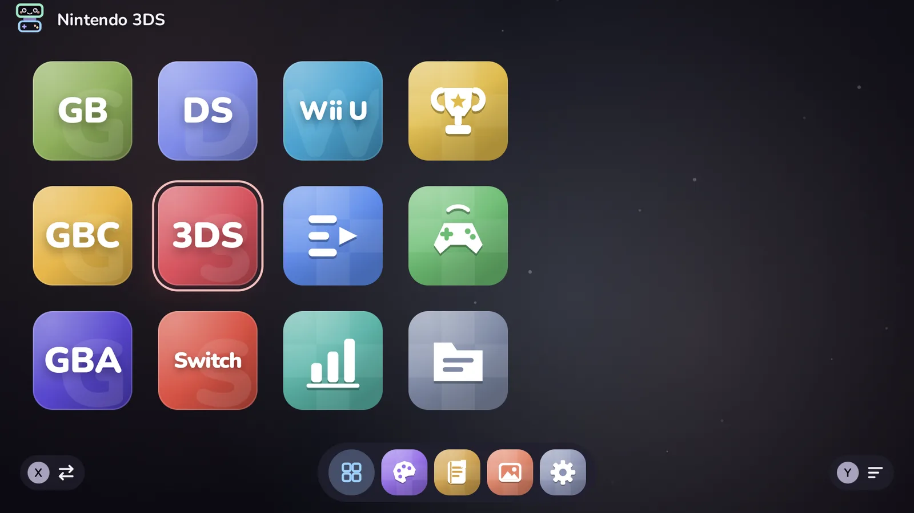
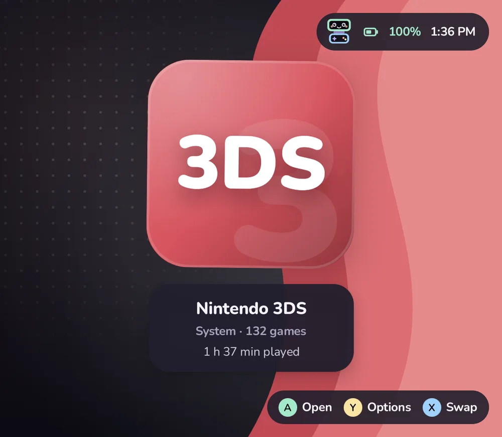
A dual-screen handheld has two places to look. Tandem uses both, and works just as well on one.
Systems, folders, collections and your Android apps, moved through with the D-pad or stick. Touch works too.
Whatever is highlighted shows on the bottom screen: box art, logo, description, play time, and whether it is still running.
Tandem starts the game in the right emulator. Press Home later, pick it again, and you are back where you were.
Every screenshot here was taken on an AYN Thor running Tandem.
Pick a layout and a look, then fine-tune it. Changes apply instantly, with a soft cross-fade.
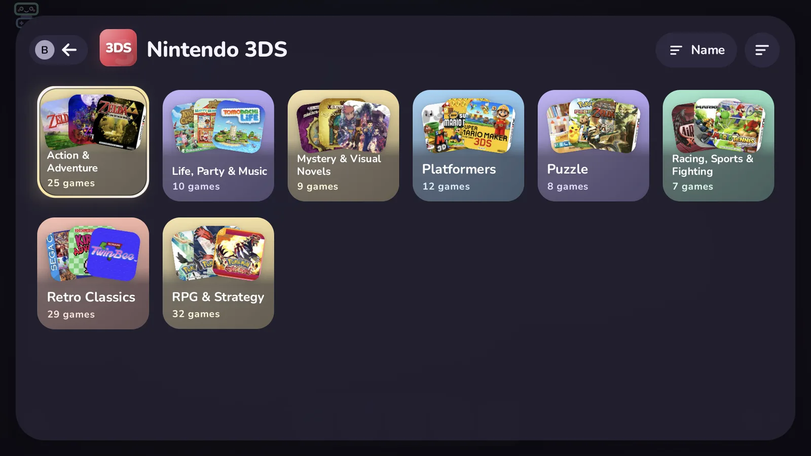
The bottom screen follows the highlight above. When nothing is highlighted, it shows Pip, the clock and your widgets.
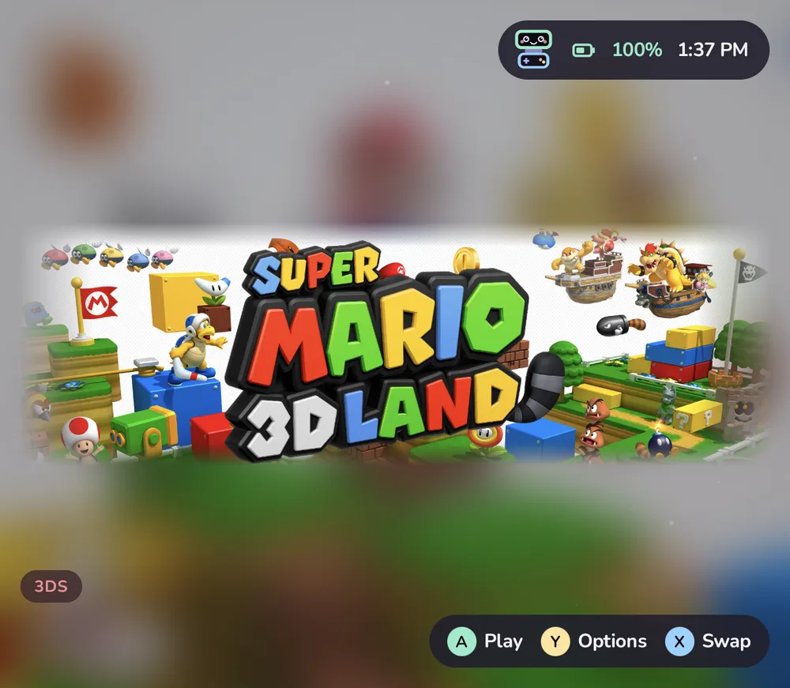
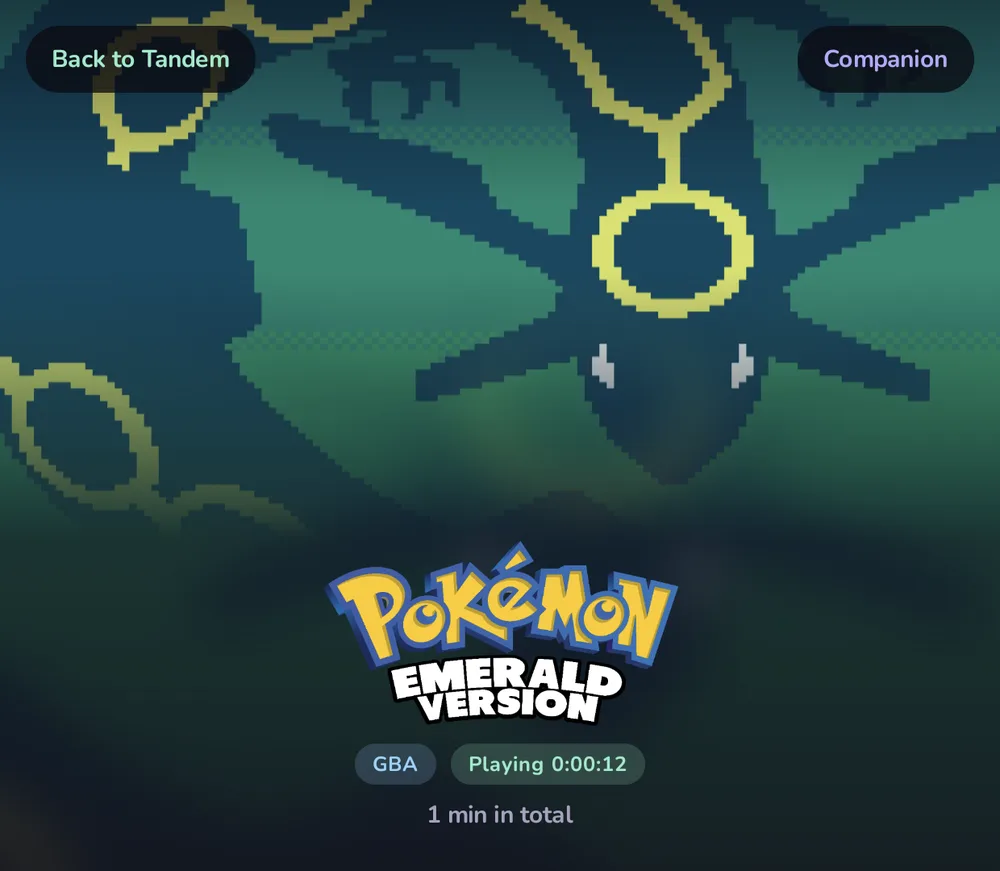
Press Home mid-game and browse a little. Tandem keeps a Resume card for the game that is still open, and picking it again brings the emulator straight back instead of starting over.
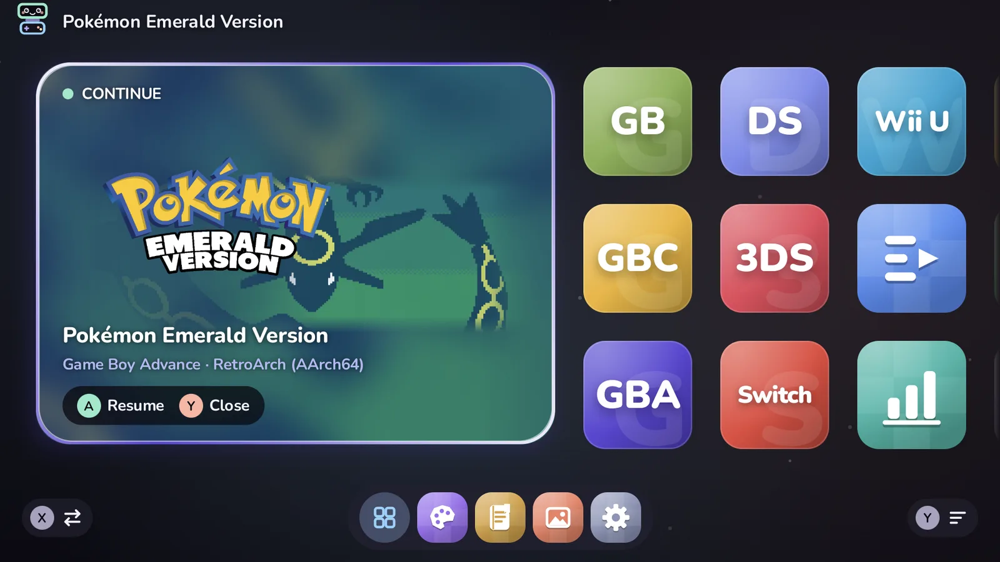
Box art, logos, hero images, screenshots, video snaps and descriptions, from the sources you choose, saved next to your games where other frontends can use them too.
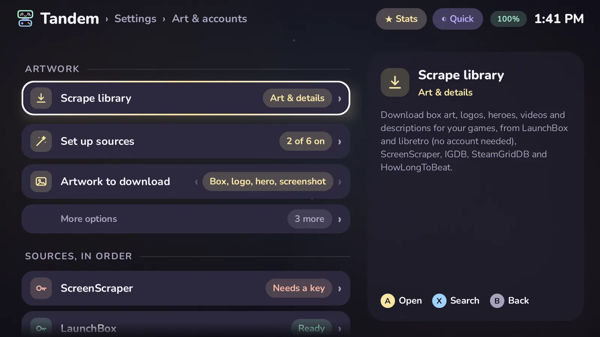
A to open or play, B to go back, Y for options on anything. Every screen remembers what you had highlighted.
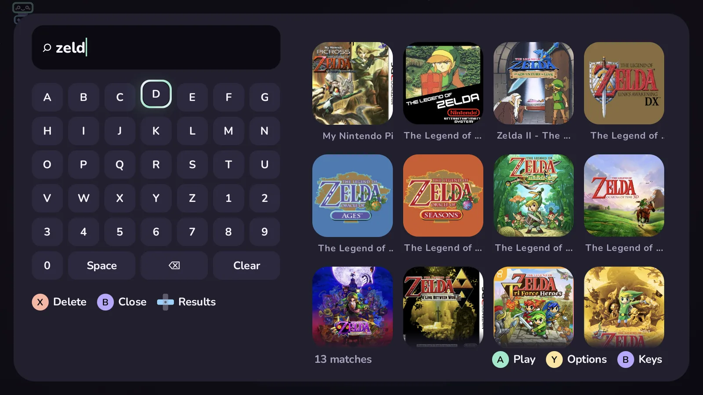
Play time, sessions, streaks and a 30-day chart, a journal for notes on each session, and CSV export.
Sign in to see your profile, recent unlocks and each game's progress. Games are matched by a hash made on the device.
Two packs of original background music, Meadow Tales and Pastel Arcade, five UI sound packs, or your own tracks.
Folders, collections, favourites and Up next. Tuck away anything you'd rather not see.
Your covers drift past a big clock while Pip naps. Also available as Android's own screensaver.
Reads ES-DE gamelist.xml files and other launchers' backups: titles, descriptions, favorites, play time and art.
Systems and emulators live in an editable platforms.json. Your library and settings are plain JSON, with backup and restore.
A screenshot gallery, a file browser, an Up next list and a controller tester sit on the grid next to your systems.
A baseline profile for fast starts, work kept off the frame, and background jobs that pause the moment a game starts.
The top screen is 1920×1080, the bottom one 1240×1080.
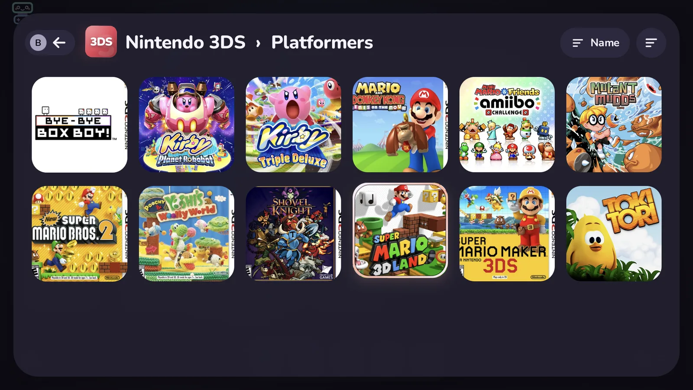
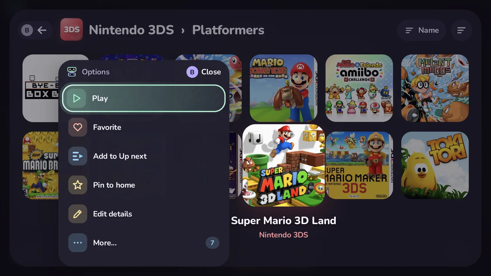
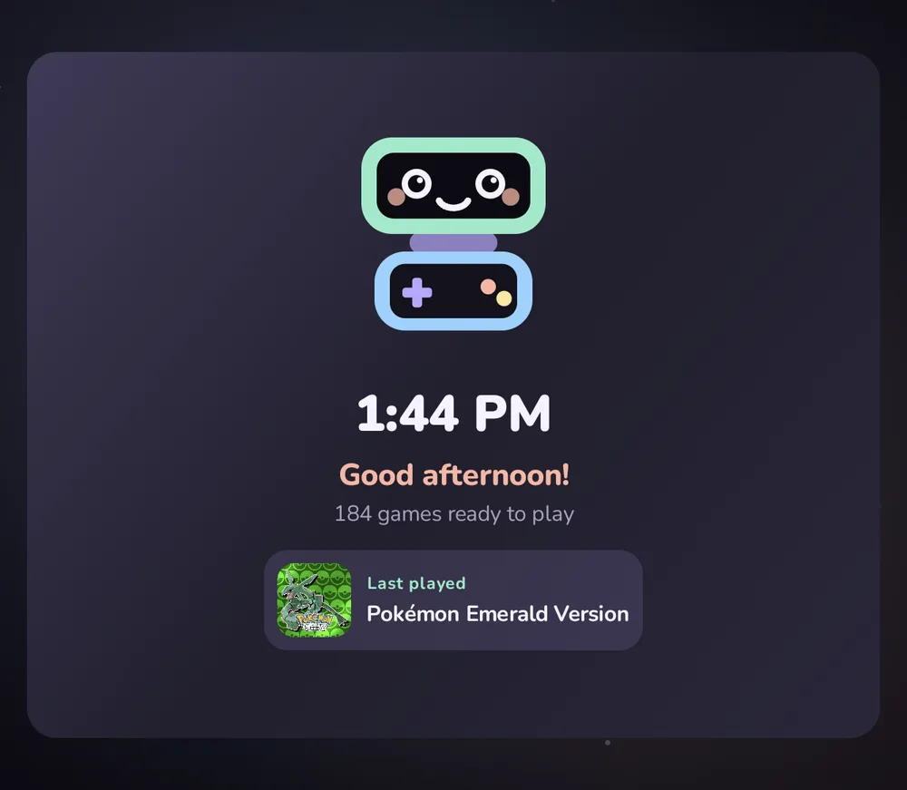
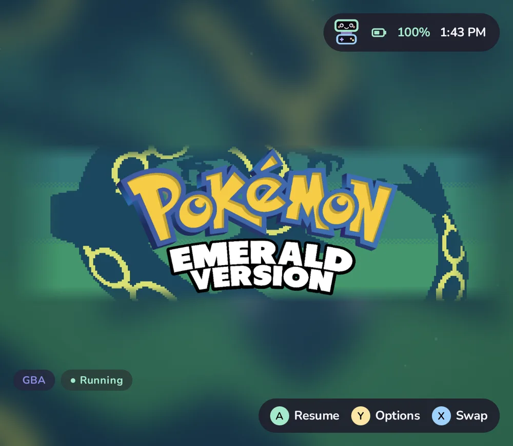
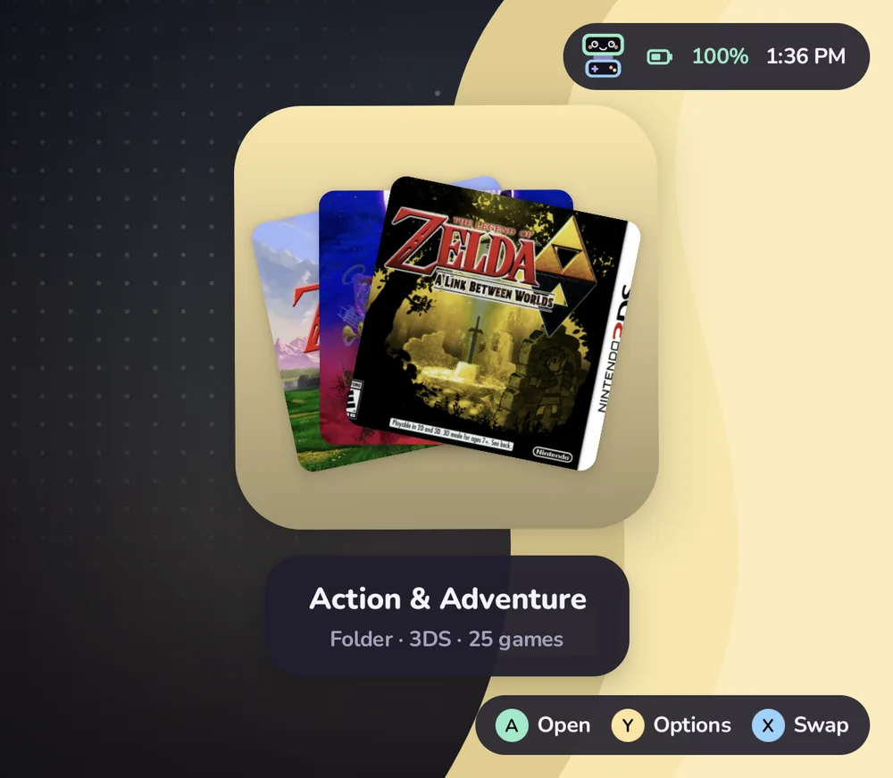
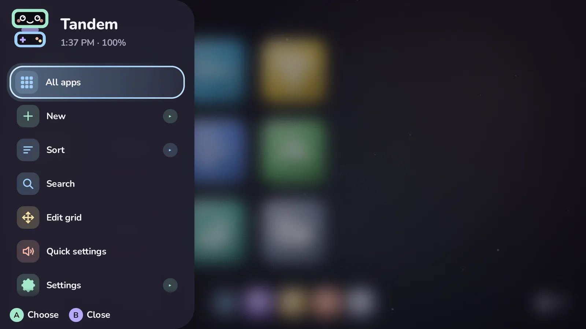
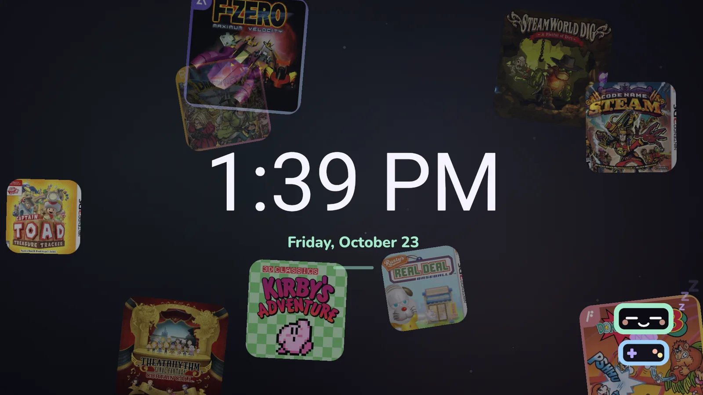
Tandem finds the emulators you have installed and offers every one that fits. A few of the 104 systems it knows:
Missing one? Systems and emulators are defined in platforms.json; copy it to ROMs/tandem/ and add yours, no update needed. The reference explains every field.
What you play, and for how long, stays on your handheld. There is no account to make and nothing phoning home. You can check: the code is right there.
Read the privacy pageOne APK and a couple of minutes of setup. The getting started guide walks through every step.
Download the signed APK from the latest release and open it on your handheld.
Latest releaseThe store listing is ready in the repository. Until Tandem is accepted, use one of the other two.
ROMs/, one folder per system (ROMs/n3ds, ROMs/gba…).No. Tandem shows the games you already have and starts them in emulators you install yourself. It never downloads games or system files.
Any Android 11 or newer device. It is designed around the AYN Thor's two screens and uses a second display on any device that has one. On a single screen, everything still works.
To read your ROMs folder and its artwork quickly, and to save artwork you scrape next to your games. It also asks you to pick the ROMs folder once, so it can hand games to emulators that only open shared files.
No. Shizuku only powers resume and the game switcher: seeing whether a game is still open in its emulator. Without it, every game starts fresh. More on resume.
Only for what you start: scraping artwork and details, and RetroAchievements if you sign in. No analytics, no ads, no update checks. The privacy page lists exactly what each service receives.
Yes. Copy platforms.json to ROMs/tandem/platforms.json and add an entry; no rebuild needed. The reference explains every field, and requests are welcome on GitHub.
No. Tandem reads ES-DE gamelists and other launchers' backups and brings over titles, descriptions, genres, favorites, play time and artwork. It doesn't change their files, so your old frontend keeps working. Importing.
Yes, if you like: Tandem can be Android's Home app, with an apps drawer and a dock, so the Home button always brings you back to your games.
Yes: GPL-3.0, no ads, no paid tier, no account. Bug reports, emulator configs, docs and code are all welcome.
No. Tandem is an independent community project, not affiliated with AYN or any emulator project.
Grab the APK, point Tandem at your ROMs, and say hi to Pip.